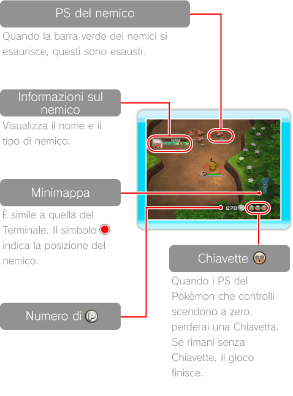
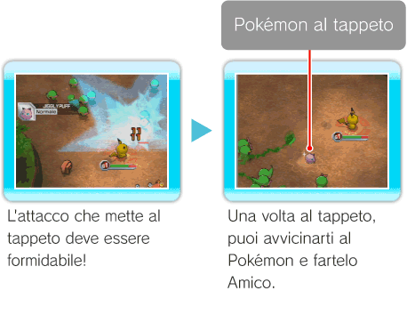
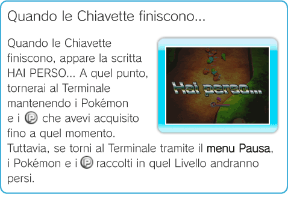
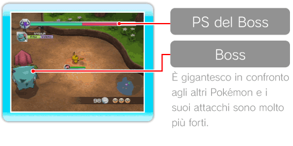
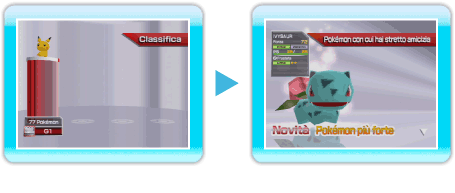

13 |
Livelli |
 |
|
La schermata dei Livelli La schermata di ciascun Livello contiene la minimappa, il numero attuale di 
Regole e metodo di progressione nei Livelli Man mano che batti i nemici progredirai nei Livelli. Ogni Livello è composto da diverse mappe e in fondo a ognuna si trova un Trampolancio: usalo per procedere alla mappa successiva. Nell'ultima mappa troverai un Boss: sconfiggilo per completare il Livello! Quando passi alla mappa successiva, non puoi più tornare indietro. Nota: tramite l’opzione TERMINALE nel menu Pausa (vedi pag. 16: Menu Pausa) puoi tornare direttamente al Terminale, ma perderai Amici e
Stringere amicizia con Pokémon messi al tappeto Quando sconfiggi un Pokémon, capita che questi finisca al tappeto, cioè che rimanga steso per terra. Se lo tocchi mentre è al tappeto puoi farlo diventare tuo Amico. Puoi sostituire il Pokémon che ti accompagna con uno di quelli con cui hai stretto amicizia in qualunque momento tramite il menu Cambio (vedi pag. 11: Menu Cambio). Ricorda, però, che i Pokémon ottenuti nella modalità Più giocatori (vedi pag. 18: Edifici per la modalità più giocatori) possono essere utilizzati, fino al completamento del Livello, soltanto dal giocatore che li ha catturati. Inoltre, se in seguito a un Colpo Critico (vedi pag. 15: Colpi Critici) un Pokémon cade in Traballo, è più facile metterlo al tappeto attaccandolo in quel momento. I Pokémon messi al tappeto scompaiono dopo un certo periodo di tempo se non li raccogli. 
Sostituire il Pokémon Per cambiare il Pokémon che stai utilizzando premi Quando apri il menu Cambio durante un Livello, il tempo continua a scorrere, dunque potresti subire degli attacchi anche in questa condizione. Se un Pokémon viene colpito proprio nel bel mezzo di un Cambio, questo viene annullato, perciò fai molta attenzione a scegliere il momento giusto!
PS e Chiavette All'inizio di ogni partita hai in dotazione tre Chiavette Misteriose I Pokémon che perdono tutti i PS non possono essere utilizzati finché non torni al Terminale.
Nota: nella modalità Più giocatori i PS dei Pokémon sono relativi al giocatore che li controlla, mentre le Chiavette sono in comune tra tutti i giocatori.
 Lottare contro il Boss Nell'ultima mappa di ogni Livello troverai un Boss ad attenderti. Se riesci ad azzerare i PS del Boss e batterlo vedrai comparire un Trampolancio: saltaci su per completare il Livello. A volte, quando il Boss finisce al tappeto, è possibile stringerci amicizia.  Schermata di completamento di un Livello Quando completi un Livello, viene visualizzato sia il numero che il tipo di Pokémon che ogni giocatore ha battuto o ottenuto. Nella schermata di completamento del Livello è segnalato il Pokémon più forte, ovvero quello con più Punti Forza di tutti. Inoltre, i Pokémon contrassegnati con la scritta NOVITÀ sono quelli con i quali non hai mai fatto amicizia prima. |
 ; accederai così al menu Cambio e potrai selezionare il Pokémon con cui sostituire quello in uso. Cambiare il Pokémon prima che i suoi PS si esauriscano del tutto ti permette di continuare a giocare senza perdere Chiavette.
; accederai così al menu Cambio e potrai selezionare il Pokémon con cui sostituire quello in uso. Cambiare il Pokémon prima che i suoi PS si esauriscano del tutto ti permette di continuare a giocare senza perdere Chiavette.
 |
 |
 |